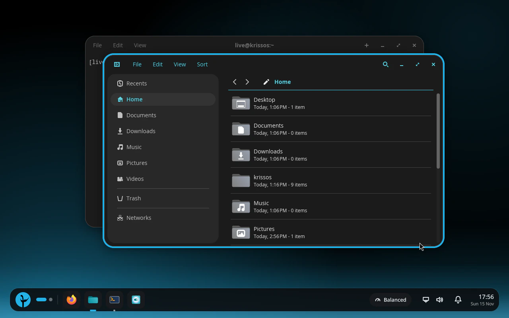
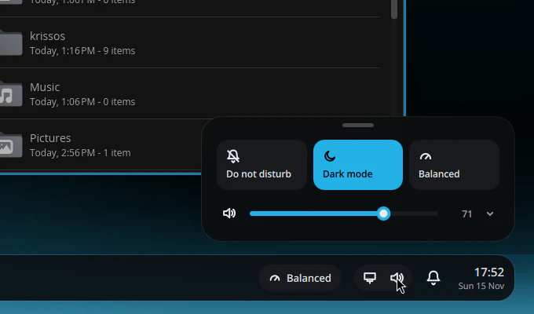
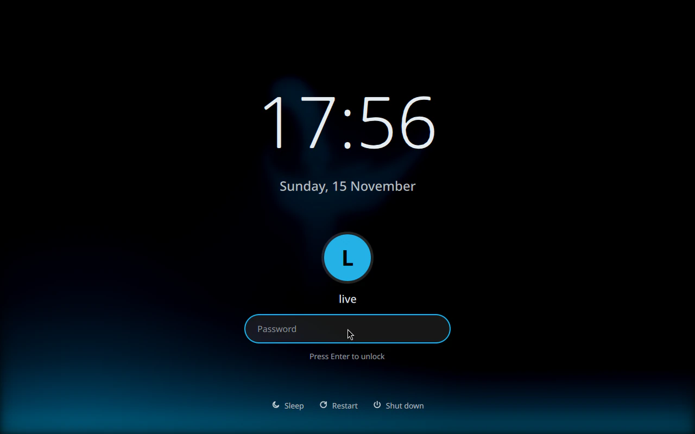

Productivity
A calm, rounded desktop with one accent color. Snapshots you can boot into when an update goes wrong. Windows apps through WinBoat when you need them.
Preview ISO out now. Release 110 is on the way.
KrissOS is a thin overlay on Arch Linux, tuned for productivity, gaming and local AI. Rolling updates straight from Arch, plus a small signed repo of our own.

The live ISO, straight after boot. Captured by the boot test in CI.
Three pillars
Work in the morning, play at night, and run your own models in between, without reinstalling or dual booting.
A calm, rounded desktop with one accent color. Snapshots you can boot into when an update goes wrong. Windows apps through WinBoat when you need them.
A kernel built for modern CPUs, Steam, Gamescope and MangoHud in one package, and power profiles that switch the scheduler for you.
Ollama on the host with CUDA, ROCm or Vulkan picked for your GPU, and an optional step to install the coding agents you already use.
What's inside
Upstream packages come straight from Arch. We ship only what is ours, in one signed repo that two people can keep alive.
One floating bar, a launcher you type into, notifications, quick settings and a lock screen, on cosmic-comp. The compositor test passed, and it is the default desktop.
Boots straight into the KrissOS Shell. CI builds it every night and boots it in a VM before it is published.
[kriss] repoOur packages, built and signed in CI and served from GitHub Releases. No mirrors to run.
kriss tune and gamingPerformance, balanced and powersave profiles with a matching sched_ext scheduler, and kriss-meta-gaming: Steam, GameMode, Gamescope, MangoHud and current drivers.
kriss-welcomeThe first-boot app: a game checker, your usual apps, copying files from Windows, drivers and extras.
kriss-vmGPU passthrough to a Windows VM with Looking Glass, on desktops. Checks your hardware first, backs up every file it edits, and reverts in one command.
linux-kriss kernelBuilt for x86-64-v3 with BORE, sched_ext and Clang ThinLTO, from source in our CI. A generic build covers older CPUs. Being tested before it becomes the default.
Calamares with a desktop picker, dual boot, btrfs and snapper, and every snapshot one pick away in the Limine boot menu. Being tested in CI.
Supported through sbctl. A pacman hook re-signs the kernel and bootloader on every update.
WinBoat runs Windows productivity apps in a container. One command checks KVM and sets it up.
Ollama with GPU detection for CUDA, ROCm and Vulkan, and an optional step to install the coding agents you already use.
KrissOS Shell
The Windows key opens the launcher, Windows+L locks, and windows float with a Sky Cyan ring on the one in focus.



Desktop
The KrissOS Shell is the default desktop. The installer also offers KDE Plasma, themed to match.
Open source
Every package, kernel and image is built from source on public CI. Follow along, file an issue, or try the repo on your Arch install today.